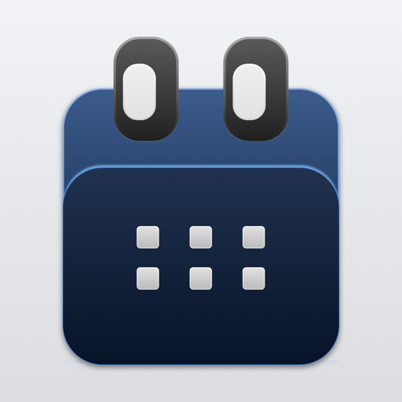

A fast, private calendar for iPhone and Mac. Google, iCloud, and Microsoft 365 side by side — no middleman servers, ever.
Chronos is a calendar application for iPhone and Mac. Its purpose is to let you view, create, edit, and respond to calendar events across the calendar accounts you already have — Google Calendar, iCloud, and Microsoft 365 — in a single app.
When you connect a Google account, Chronos requests access to Google Calendar and uses that access solely to show your calendars and events in the app, to create, update, and delete events at your direction, and to send your responses to event invitations. Your Google data is displayed to you, cached on your device for performance, and never transferred to anyone else — see the privacy policy for the full details.
"Dinner with Sarah at Passero next Tuesday at 7pm" becomes a full event — date, time, place, and people parsed as you type, real invitations included.
Chronos talks straight to Google Calendar, iCloud, and Microsoft 365. Your credentials and events never pass through third-party servers.
Hourly forecasts on your day, temperatures on your events, and EPA AirNow air quality — right where you plan.
Everything stays on your device. No accounts with us, no analytics, no tracking. Read the privacy policy — it's short because there's nothing to disclose.